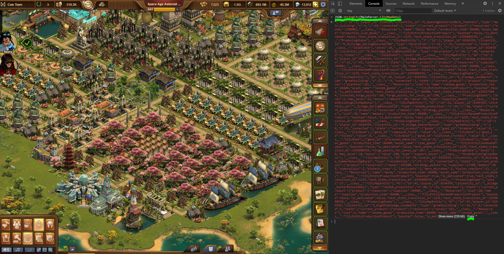
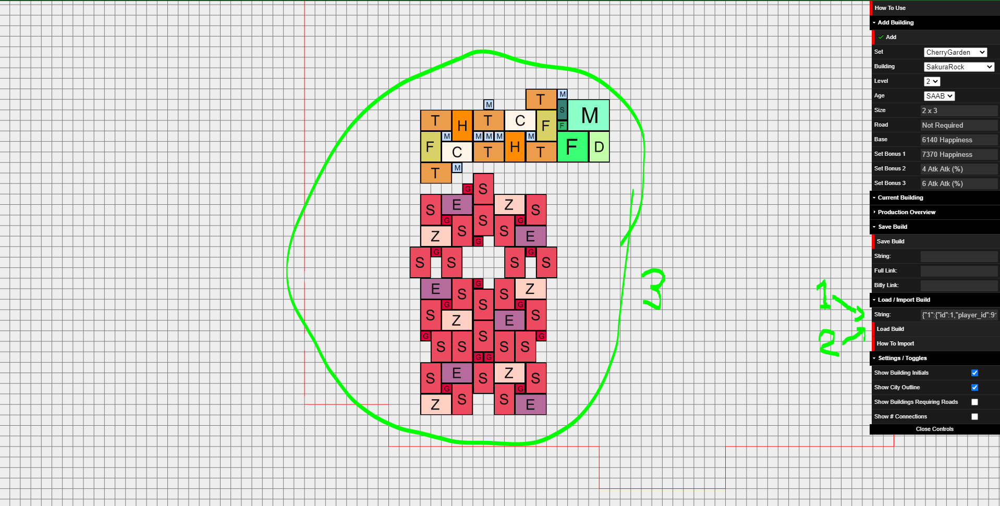
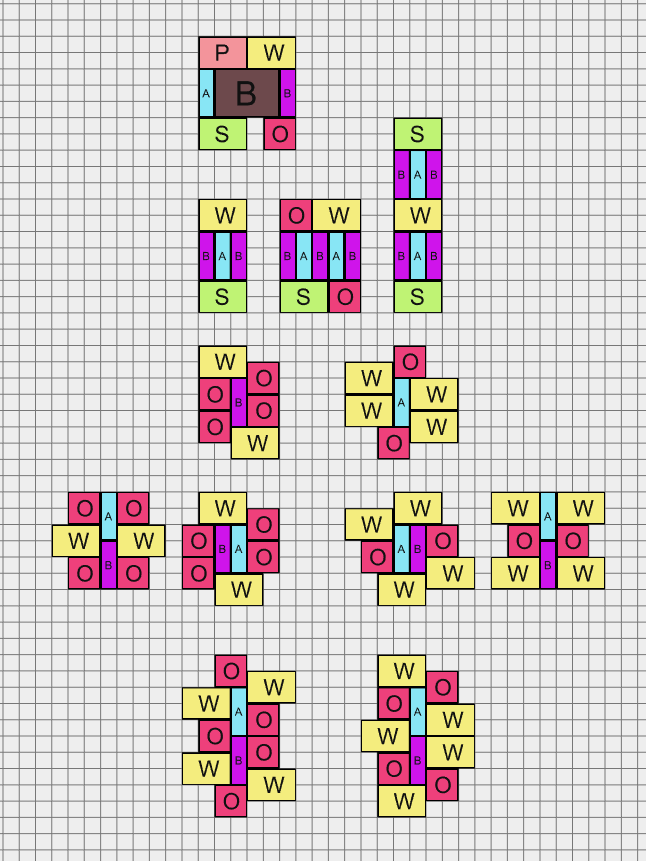

To add a building, simply select the set, building, age and level and click the "Add Building" button. The building will be added to the scene and you can start building! When selecting a building, the stats of the chosen building is displayed, giving you information of what the building gives with your current options.
Move Building: Click and drag the building you want to move, drop to stop moving. Buildings will automatically snap to the grid and cannot be placed on top of each other.
Remove Building: Click the "Remove Building" option under "Current Building" or press "delete/backspace" to remove the currently selected building.
Change Current Building: Open "Current Building" menu and update age, level and whether the building is connected to road (if required), changes are automatically applied. An unconnected building will count towards the set bonuses of neighboring buildings, but its own rewards will not.
Zoom: Use the scroll-wheel to zoom in and out from the grid.
Move View: Left-click and drag to move the view (like browser foe)
Select Multiple Buildings: Right-click and drag to select multiple buildings. Only selected buildings will be displayed in the production overview
Delete Multiple Buildings: Pressing "delete/backspace" after selecting multiple buildings will delete all selected buildings
Move Multiple Buildings: Click and drag one of the selected buildings, this will move all selected buildings. Only the building dragged will avoid overlapping with other buildings, buildings on top of eachother will count as connected buildings, so place with care.
Copy + Paste: After selecting multiple buildings, use CTRL+C and CTRL+V (CMD on Mac) to copy and paste. The buildings will be pasted to your mouse position
Tip: If you select buildings using right-click + drag, only the productions of the selected buildings will be shown!
The Production Overview shows you what your current setup will give you per collection. "All Sets" will show the total production information of all buildings in your design. "Per Set" will only show the production of the chosen set. For each option you can choose between "Total" and "Per Tile" production, which show the raw numbers, and the raw numbers divided by the tiles used, respectively.
At this stage roads required and empty spaces within a build is not automatically calculated, but you can manually enter these values (type number and hit "Enter") and the Per Tile overview will take these into acount.
Show Building Initials: This option toggles whether or not the first letter of each building is displayed. This is designed to make it easier to distinguish buildings, but if you've familiar with the color scheme you might find them annoying instead.
Show City Outline: This option toggles whether or not the city outline is shown. The red outline shows the maximum size of a forge of empires city, though keep in mind that at the moment a full city cannot be filled with the current expansions.
Show Buildings Requiring Roads: This option highlights all the buildings that require roads. Buildings that require roads will be marked in Yellow, all other buildings will be made Gray. The buildings will be reset to their own color when the option is turned off
Show # Neighbours: This option highlights how many unique set neighbours a buildings has. Green means all bonuses are active, yellow means all but 1 bonus is active, orange all but 2 active, and so on.
To save the current build click the "Save Build" button. This will generate three methods of saving and sharing your build. You can copy and store the save string, either locally or in a pastebin file (or similar), you can copy the share link and share that directly, or you can use the automatically generated bit-ly link. Alternatively, to make the link easy to copy and share, shorten the full link using your favourite link shortening website. At this stage online saving is not possible.
Due to URL length limits (how long of a link a browser can load), the direct link and bit.ly links will only work if you have less than 300-350 buildings. For performance reasons I would advise against having that many buildings, though, and rather work on multiple tabs with smaller designs (<100 buildings). The save string should always work if the direct links are too long.
To load a build, either paste the save string under "Load Build" and press the "Load Build" button, or simply open a share link.
WARNING: Loading a build will delete the current build, make sure to save before loading a new build.
PS: To update production overview after a build is loaded simply click anywhere on the grid.
Tip: Load an empty string (or refresh page) to clear the scene :)
Forge of Empires, FOE, and all associated trademarks and content belong to InnoGames
GmbH.
foe-event-set-builder.github.io is an unofficial 3rd party site, and is not directly affiliated
with InnoGames.
This site was created as a hobby project by a person quite new to javascript / website development, so please don't hesitate to contact me on foeeventsetbuilder@gmail.com or create an issue on github if you have any questions, issues or suggestions.
Created by MooingCat, EN(16), June 2020.
Importing your city requires you to have FoeHelper installed. With FoeHelper installed, open the browser inspector using Ctrl+Shift+I on Windows, Cmd+Shift+C on Mac. Go to the console, and enter the following command:
JSON.stringify(MainParser.CityMapData)
Copy the output string, and paste that into the load city input field. After pasting the text, simply click load city and your build will be imported :)


Here are a few sharable links for what I think are some great 2020 Fall Event set design options :)
Full links to reddit / forum (full event set builder link after preview):

Full: https://foe-event-set-builder.github.io/?850h1ö1ö2z850h1öy8ö3z850h1öybö4z850h1öy8ö5z850h1öybö6z850h1ö0ö7z820h1öyawgö2z820h1öy8wgö7z820h1öy1wgö3z820h1öy1wgö5z820h1ö2wgö4z820h1ö2wgö6z830h1öy9wgö4wgz840h1ö0wgö4wgz830h1ö0wgöy4wgz830h1ö2wgöy4wgz840h1ö1wgöy4wgz810h1ö1wgöy2z820h1ö1wgöy7z850h1ö3ödz850h1öy8öcz850h1öycödz850h1öy8öez850h1öycöfz850h1öy1öez820h1öyawgöbz820h1öy9wgögz820h1öy1wgöcz820h1ö0wgögz820h1ö1wgöbz820h1ö3wgöfz830h1öyawgödwgz840h1ö0wgödwgz830h1ö1wgödwgz840h1öy9wgödwgz830h1ö0wgöy9wgz830h1ö2wgöy9wgz840h1ö1wgöy9wgz810h1ö1wgöycz830h1öybwgöy4wgz830h1öy9wgöy4wgz840h1öyawgöy4wgz810h1öyawgöy2z820h1öyawgöy7z830h1öy6wgöy4wgz830h1öy4wgöy4wgz840h1öy5wgöy4wgz810h1öy5wgöy2z820h1öy3wgöy7z850h1öy6öy7z850h1öy3öy2z840h1öy3wgöy4wgz830h1öy2wgöy4wgz810h1öyawgöycz820h1öy7wgöyhz850h1öy7öycz840h1öybwgöyewgz830h1öy6wgöyewgz803h1öy9öyewgz860h1öyawgöyhz850h1öy4önanz850h1öygöbz850h1öyjöbz850h1öygöfz850h1öyjöfz820h1öyjwgödz820h1öyfwgödz830h1öyhwgöewgz840h1öyhwgöbwgz850h1öbödz850h1ö8ödz820h1ö7wgöbz820h1ö7wgöfz820h1öbwgöbz820h1öbwgöfz840h1ö9wgöbwgz830h1ö9wgöewgz850h1ö3ömz850h1ö0önz850h1ö3ösz850h1ö0örz820h1öy0wgöpz820h1ö3wgöoz830h1ö1wgöqwgz840h1ö1wgönwgz850h1öy8öoz850h1öyböpz820h1öybwgönz820h1öybwgörz820h1öy7wgömz820h1öy7wgösz840h1öy9wgönwgz830h1öy9wgöqwgz850h1öyaölz850h1öyaötz820h1ö0wgölz820h1ö0wgötz850h1öy8öqz820h1ö3wgöq?0x0y0x0
FP: https://foe-event-set-builder.github.io/?830h1öy7wgöawgz830h1öy5wgöawgz840h1öy6wgöawgz810h1öy6wgödz820h1öy6wgö8z830h1öy7wgö5wgz830h1öy5wgö5wgz840h1öy6wgö5wgz810h1öy6wgö3z830h1öycwgöawgz830h1öyawgöawgz840h1öybwgöawgz810h1öybwgödz820h1öybwgö8z850h1öy4önanz830h1öy2wgöawgz830h1öy0wgöawgz840h1öy1wgöawgz810h1öy1wgödz820h1öy1wgö8z830h1öy2wgö5wgz830h1öy0wgö5wgz840h1öy1wgö5wgz810h1öy1wgö3z830h1öy2wgö0wgz830h1öy0wgö0wgz840h1öy1wgö0wgz820h1öy1wgöy2?0x0y0x0
Attack: https://foe-event-set-builder.github.io/?850h1ö1öyhz850h1öydöyhz850h1öygöygz850h1öydöyfz850h1öygöyez850h1ö0öycz820h1öyfwgöyiz820h1öydwgöydz820h1öy1wgöygz820h1öy1wgöyez820h1ö2wgöyfz820h1ö2wgöydz830h1öyewgöyfwgz840h1ö0wgöyewgz850h1ö3öy7z850h1öydöy8z850h1öyhöy7z850h1öydöy6z850h1öyhöy5z850h1öy1öy6z820h1öyfwgöy9z820h1öyewgöy4z820h1öy1wgöy8z820h1ö0wgöy4z820h1ö1wgöy9z820h1ö3wgöy5z830h1öyfwgöy6wgz840h1ö0wgöy6wgz830h1ö1wgöy6wgz840h1öyewgöy6wgz850h1öy4önanz850h1öydö0z850h1öygö0z850h1öydö4z850h1öygö4z820h1öygwgö2z820h1öycwgö2z830h1öyewgö3wgz840h1öyewgö0wgz850h1ö2ö2z850h1öy1ö2z820h1öy1wgö0z820h1öy1wgö4z820h1ö2wgö0z820h1ö2wgö4z840h1ö0wgö0wgz830h1ö0wgö3wgz850h1ö2ö9z850h1öy1öaz850h1ö2öfz850h1öy1öez820h1öy1wgöcz820h1ö2wgöbz830h1ö0wgödwgz840h1ö0wgöawgz850h1öydöbz850h1öygöcz820h1öygwgöaz820h1öygwgöez820h1öycwgö9z820h1öycwgöfz840h1öyewgöawgz830h1öyewgödwgz850h1öyfö8z850h1öyfögz820h1öy0wgö8z820h1öy0wgögz850h1öydödz820h1ö2wgöd?0x0y0x0
This tool is designed to be used with a mouse and keyboard, so not everything will work properly if you're on mobile. You should be able to view designs made by others, but making your own designs will be difficult. At the moment I don't have the time to make a mobile version, so if you want to use the tool you should use a PC browser. (If you see this but are on a PC browser, just close and ignore)
-MooingCat